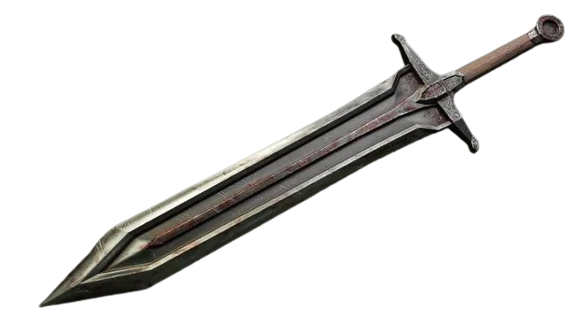
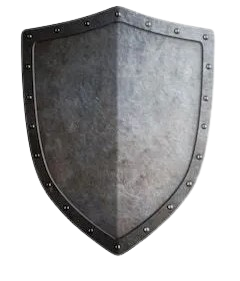
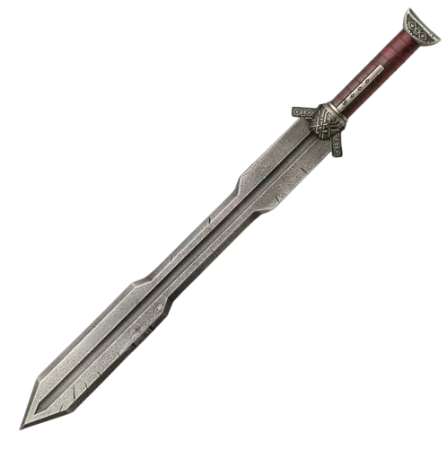
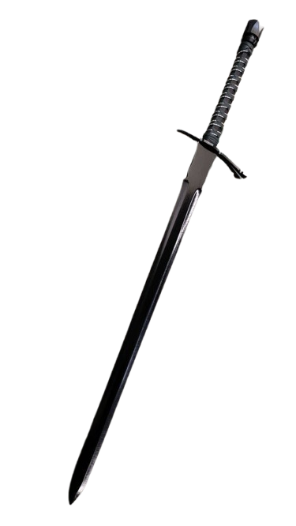

Levi
Identidade
- Interpretado: jonas
- Raça: Humano
- Nivel: 3
- Idade: 20 Anos humanos
- Altura: 1,97
- Classe: Guerreiro
- Antecedência: Nobre
- Associação: Guilda Fogo Eterno
- Hobbs: Treinar Espada e Jogar Cartas
- Personalidade: Tímido, meio ganancioso
Historia
ele pertencia a uma família nobre, os Stone. Desde criança, sabia que sua família tinha uma rivalidade histórica com os Kluivert, mas, desde pequeno, ele nutria um carinho especial pela filha mais velha dessa família, Curiosamente, ela também sentia o mesmo por ele, Embora o namoro fosse praticamente proibido, já que a família dela não se importava muito com isso, eles continuaram a se ver em segredo, Com o tempo, a família da jovem começou a gostar de Levi, mas a sua própria família, ao descobrir sobre o relacionamento, proibiu-o de vê-la, Com isso, Levi ficou confinado em casa e, a partir dos 12 anos, começou a se dedicar ao treinamento, Com o tempo, ele passou a desenvolver o desejo de se tornar um aventureiro e de ajudar as outras pessoas, Mesmo enfrentando a oposição de sua família, ele decidiu seguir seu caminho e se tornar um aventureiro, O criado da família Stone, fiel a Levi, forneceu-lhe tudo o que ele precisava para embarcar nessa jornada.Aparencia
Cabelos: Cabelos escuros, curtos e bem penteados, com um leve topete que dá um ar de nobreza ou cavalheirismo. A barba é bem aparada, conferindo-lhe um visual maduro e centrado.
Expressão: Olhar firme, concentrado, com traços faciais que demonstram muita determinação.
Armadura: Veste uma armadura de placas de metal escuro, trabalhada com detalhes ornamentados e arabescos discretos. A armadura tem um design elegante e funcional, Usa um lenço ou echarpe branca em volta do pescoço.
Status e aptidões
-
Vida [46]
-
Defesa [19]
-
força [+9]
-
destreza [+6]
-
constituição [+8]
-
inteligencia [+2]
-
sabedoria [+3]
-
carisma [+6]
Raça:Humano
Aumento no Valor de Habilidade. Todos os
valores de habilidade aumentam em 1.
Deslocamento base de caminhada
é 9 metros.
Classe: Guerreiro Campeão
O arquétipo Campeão foca no desenvolvimento da pura
força física acompanhada por uma perfeição mortal.
Aqueles que trilham o caminho desse arquétipo
combinam rigorosos treinamentos com excelência física
para desferir golpes devastadores.
Estilo de Luta: Combate Com Armas Grandes
Combate Com Armas Grandes
Quando você rolar um 1 ou um 2 num dado de dano de
um ataque com arma corpo-a-corpo que você esteja
empunhando com duas mãos, você pode rolar o dado
novamente e usar a nova rolagem, mesmo que resulte em
1 ou 2.
A arma deve ter a propriedade duas mãos ou
versátil para ganhar esse benefício.
Armas
| Arma | Descrição |
|---|---|
|

Espada Grande |
uma espada grande(cerca de 2m)
dano: 2d6+for. |
|

Escudo de ferro |
um escudo de ferro
+2 na defesa. |
|

Espada Curta |
uma espada curta, levemente enferrujada
dano: 1d6+for. |
|

Espada-longa |
uma espada longa preta
dano: 1d8+for ou 1d10 segurado com as duas mãos |
Magias
Truques
- Truque 1: N/A
- Truque 2: N/A
- Truque 3: N/A
- Truque 4: N/A
- Truque 5: N/A
Magias 1
- Magia 1: N/A
- Magia 2: N/A
- Magia 3: N/A
- Magia 4: N/A
- Magia 5: N/A
Magias 2
- Magia 1: N/A
- Magia 2: N/A
- Magia 3: N/A
- Magia 4: N/A
- Magia 5: N/A
Magias 3
- Magia 1: N/A
- Magia 2: N/A
- Magia 3: N/A
- Magia 4: N/A
- Magia 5: N/A
Magias 4
- Magia 1: N/A
- Magia 2: N/A
- Magia 3: N/A
- Magia 4: N/A
- Magia 5: N/A
Magias 5
- Magia 1: N/A
- Magia 2: N/A
- Magia 3: N/A
- Magia 4: N/A
- Magia 5: N/A
Magias 6
- Magia 1: N/A
- Magia 2: N/A
- Magia 3: N/A
- Magia 4: N/A
- Magia 5: N/A
Magias 7
- Magia 1: N/A
- Magia 2: N/A
- Magia 3: N/A
- Magia 4: N/A
- Magia 5: N/A
Magias 8
- Magia 1: N/A
- Magia 2: N/A
- Magia 3: N/A
- Magia 4: N/A
- Magia 5: N/A
Magias 9
- Magia 1: N/A
- Magia 2: N/A
- Magia 3: N/A
- Magia 4: N/A
- Magia 5: N/A